Documentation LCS monlcs
PREREQUIS:
Lisez d'abord l'introduction
Lisez ensuite les possibilités offertes à l'élève
2° Le profil
professeur et administratif.
Je suppose ici que vous
êtes capable de personnaliser un écran de monlcs. Les
notions de menu contextuel, pot de ressource, organisation des onglets
et sous-menus
associées n'est plus un mystère pour vous.
a) Le menu personnel.
Ce menu personnel vous permettra
d'avoir un espace libre, privé et non édité. Ceci
sera votre espace de travail.
Pour ajouter un menu personnel il
suffit de clique sur l'icône + tout à gache de la barre
à onglets.
Une fenêtre de dialogue
apparaît. Attention pour les sous-menus il faut bien les
séparer par des # (Alt Gr 3)
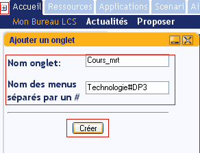 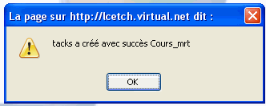
Le menu a bien été
créé avec les bons sous-menus. A droite de l'onglet un
triangle orienté vers le bas indique que vous avez la gestion de
cet onglet.
Vous pouvez le supprimmer,
ajouter ou supprimmer un sous-menu et même renommer l'onglet et
les sous-menus par un double clic.
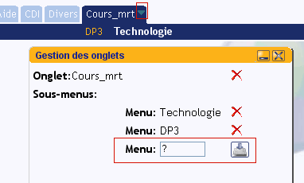
b)
Gestion des notes personelles.
Les notes personnelles sont
autorisées: sur le bureau, dans l'onglet Scenari et dans les
onglets personnels.
Pour ajouter une note: clic-droit ajouter une note:
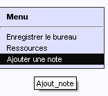
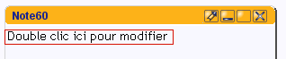
Un éditeur HTML (FCKEditor
2.6.2) très complet apparaîtt. Pour renommer la note
cliquer sur le crayon et entrer un nouveau nom (Vous avez droit aux
accents :) )

Avant d'aller plus loin vous allez initialiser l'export des notes au
format HTML en cliquant sur l'icône de lien en bas à gauche.
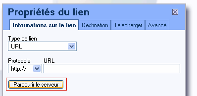
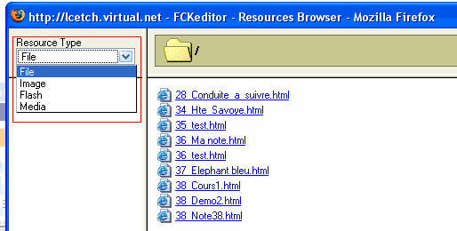
Cliquez sur
chaque élément de Resource Type, ceci va
générer automatiquement le dossier correspondant dans
votre home utilisateur.
Quitter ces fenêtres.
Il vous reste
à remplacer le texte Double clic ici par votre message et
à insérer les éventuelles images.
FCKEditor
à aussi des fonctions qui vous permettent de
transférer des ressources vers votre home utilisateur.
Vous pouvez
aussi mettre en place un système de liens hypertextes.
A la fin cliquer la disquette pour sauvegarder le travail.
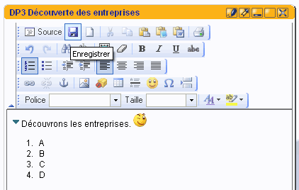
Vous pouvez dès lors publier la note au format HTML:
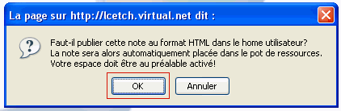
Dans le pot de ressource la publication est maintenant disponible:
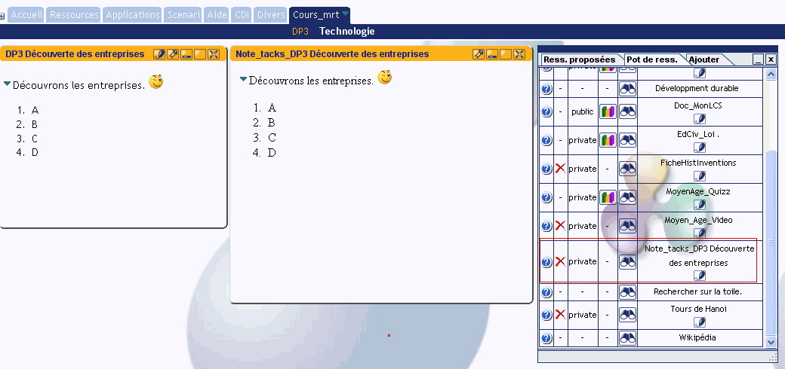
Dans l'odre de gauche à
droite: la note - la publication HTML (dans le home utilsateur) - Le
pot de ressources avec la publication enregistrée. Votre note
est maintenant disponible pour une publication dans un scénario
pédagogique ou en tant que ressource que vous pouvez proposer dans les divers menus.
c) Proposer une ressource externe.
L'ajout
d'une ressource a déjà été abordé
lors de la présentation de MonLCS. Pour proposer une ressource
c'est très simple. Il suffit de selectionner le sous-menu
nommé "Proposer" de l'onglet dans lequel on se aimerait proposer
une ressource puis on remplit les diverses informations
demandées comme sur l'écran ci-dessous. L'utilisateur
concerné par la cible retrouvera ctte ressource dans l'onglet
ressources proposées du menu en question.
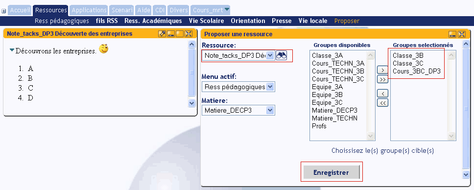
La ressource est bien
proposée dans le menu ressource pédagogique dans la
matière DP3:
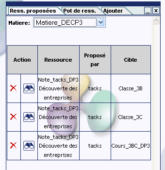
Vous pouvez
bien sur supprimmer cette proposition en cliquant sur la croix rouge.
Pour
vérifier que l'élève peut y accèder une
fonction vue du MonLCS d'un élève vous est
proposée. La liste de vos élèves est accesible en
haut à droite de l'interface.
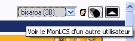
Un clic sur la
trombine élève et vous passez en mode vue
élève:
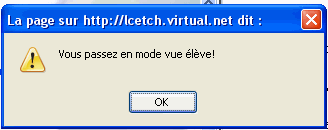
Vous naviguez
maintenant en mode lecture dans le MonLCS de votre élève.
Vérifiez maintenant que la ressource que vous venez de
proposer en bien accessible.
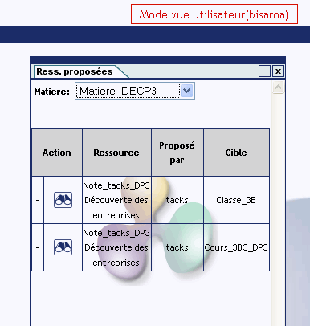
ATTENTION: Pour quitter le mode
vue élève, cliquer sur le bouton MonLCS de la barre LCS.
d) Gestion des scénarios pédagogiques. (créér -
mettre à jour - supprimer )
Pour
créer un scénario pédagogique - clic dans l'onglet
Scénari - choisir ( Dans la nouvelle version de MonLCS tout
se passe dans un seul menu pour les scenarios )
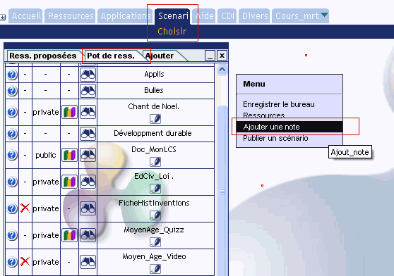
Vous posez sur le bureau soit des ressources du pot
de ressources soit une note.
Voici un exemple de scenario pour la demonstration.
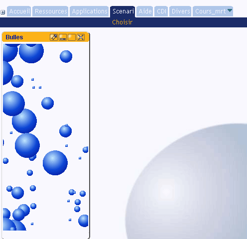
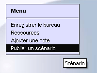 Clic droit dans une zone libre de l'écran - Publier un scénario
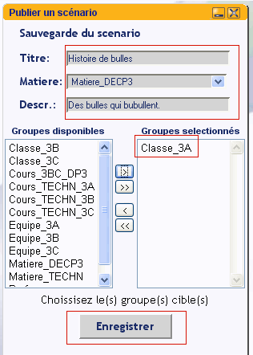 Fournir ensuite les informations requises et enregistrer.
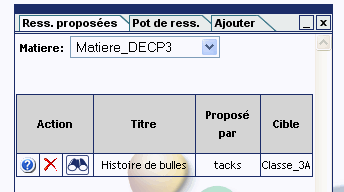Félicitations votre scénario est maintenant créé.
Pensez à
vérifier à l'aide de la fonction "Vue du MonLCS d'un
élève" l'accessibilité du scénario.
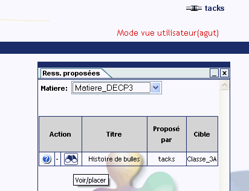
Mise à jour d'un scénario (très simple)
1° Sélectionner le scénario.
2° Modifier le scénario.
3° Enregistrer le bureau.
A venir:
fonctions
d'importation et d'exportation de scénarii sur le serveur
académique.